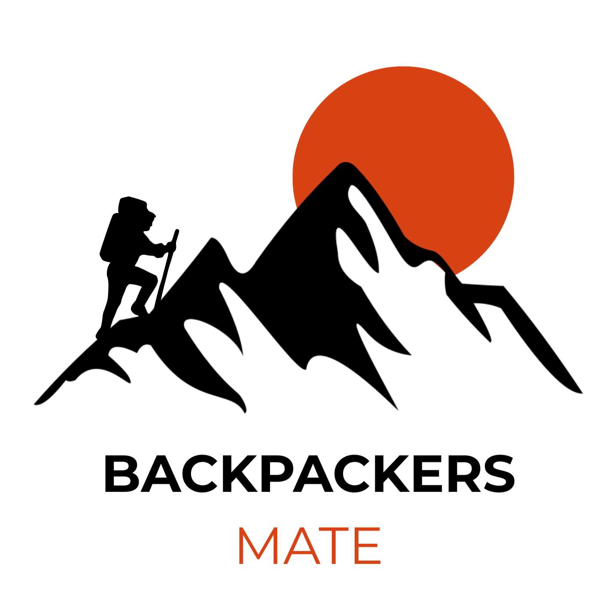

IA para triagem de saúde focada em economia corporativa.
Produto IAAnálise de turnover e custos usando Power BI e SQL.
Power BI SQL
Organização financeira para viajantes mochileiros.
Mobile UI/UXEstudante de Sistemas de Informação na FAESA e atualmente Estagiária de Desenvolvimento de Software no TRE-ES, minha jornada começou na base da tecnologia: estruturando códigos em Java e Python, e aplicando práticas rigorosas como TDD, BDD e metodologias ágeis (Scrum e Kanban). No entanto, rapidamente percebi que o que mais me fascina não é apenas construir o sistema, mas extrair a inteligência que os dados gerados por ele podem revelar. Hoje, meu foco principal é a Engenharia e Análise de Dados, aplicando Estruturas de Dados, SQL e Power BI para solucionar problemas reais, especialmente nos setores financeiro e econômico.
Acredito que os dados só têm valor quando geram impacto real. Um exemplo claro disso é a minha atuação no projeto SafeMind, onde utilizei meus conhecimentos de Análise Orientada a Objetos e Engenharia de Software para desenhar o protótipo de um aplicativo focado na triagem psicológica de adolescentes usando Inteligência Artificial. Ao mesmo tempo, no projeto Backpackers Mate, uni minha paixão por mochilões com a visão de produto (UI/UX) para arquitetar uma plataforma que resolve dores reais de viajantes, lidando com lógica de conversão de moedas e algoritmos de recomendação.
Além das telas e bancos de dados, sou movida pela descoberta e comunicação. Minha experiência com voluntariado internacional me ensinou sobre adaptabilidade em cenários imprevisíveis e me proporcionou fluência prática em Inglês e Espanhol. Essa vivência multicultural, somada ao meu olhar para o design e social, me permite construir análises de dados que não são apenas tecnicamente precisas, mas visualmente intuitivas e focadas na experiência humana.
IA para triagem de saúde focada em economia corporativa.
Produto IAAnálise de turnover e custos usando Power BI e SQL.
Power BI SQLOrganização financeira para viajantes mochileiros.
Mobile UI/UXEstudante de Sistemas de Informação na FAESA e atualmente Estagiária de Desenvolvimento de Software no TRE-ES, minha jornada começou na base da tecnologia: estruturando códigos em Java e Python, e aplicando práticas rigorosas como TDD, BDD e metodologias ágeis (Scrum e Kanban). No entanto, rapidamente percebi que o que mais me fascina não é apenas construir o sistema, mas extrair a inteligência que os dados gerados por ele podem revelar. Hoje, meu foco principal é a Engenharia e Análise de Dados, aplicando Estruturas de Dados, SQL e Power BI para solucionar problemas reais, especialmente nos setores financeiro e econômico.
Acredito que os dados só têm valor quando geram impacto real. Um exemplo claro disso é a minha atuação no projeto SafeMind, onde utilizei meus conhecimentos de Análise Orientada a Objetos e Engenharia de Software para desenhar o protótipo de um aplicativo focado na triagem psicológica de adolescentes usando Inteligência Artificial. Ao mesmo tempo, no projeto Backpackers Mate, uni minha paixão por mochilões com a visão de produto (UI/UX) para arquitetar uma plataforma que resolve dores reais de viajantes, lidando com lógica de conversão de moedas e algoritmos de recomendação.
Além das telas e bancos de dados, sou movida pela descoberta e comunicação. Minha experiência com voluntariado internacional me ensinou sobre adaptabilidade em cenários imprevisíveis e me proporcionou fluência prática em Inglês e Espanhol. Essa vivência multicultural, somada ao meu olhar para o design e social, me permite construir análises de dados que não são apenas tecnicamente precisas, mas visualmente intuitivas e focadas na experiência humana.